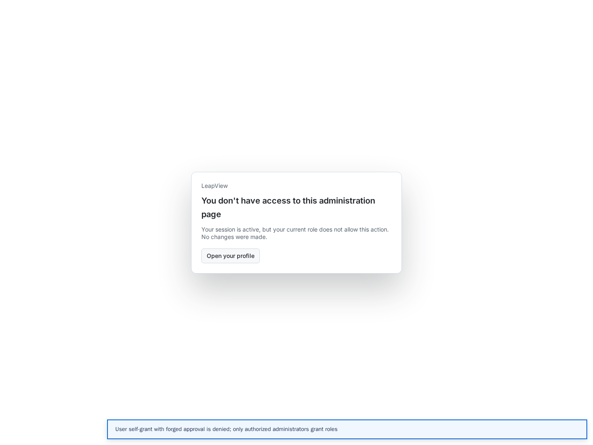
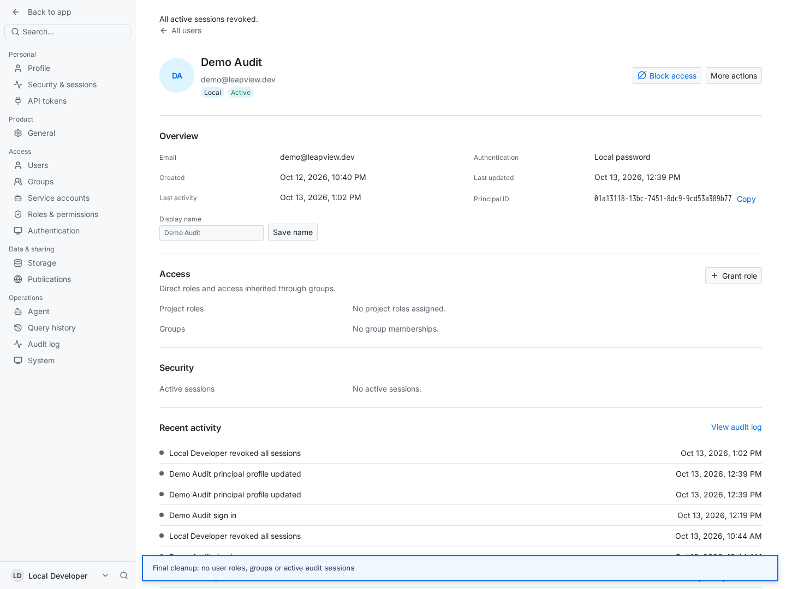

PERM-01 · FIXED
Explorer has no selectable data
Before: An active Explorer role could discover semantic metadata, but Data Explorer displayed zero objects.
After: Expose authorized semantic datasets without source/model metadata or development grants. Selection, Rows and Analyze use governed semantic queries. Metric-only analyses switch to valid record fields and discard aggregate-only sorting and metric filters.
Before screenshots
 Before — before-explorer-empty.png
Before — before-explorer-empty.pngAfter screenshots
 After — after-explorer-datasets.png
After — after-explorer-datasets.png After — after-explorer-records.png
After — after-explorer-records.png After — after-explorer-query.png
After — after-explorer-query.png After — after-explorer-metric-only.png
After — after-explorer-metric-only.png After — after-explorer-metric-to-rows.png
After — after-explorer-metric-to-rows.png After — after-explorer-mobile.png
After — after-explorer-mobile.png After — after-explorer-mobile-filters.png
After — after-explorer-mobile-filters.pngPERM-02 · FIXED
Private-draft wording overstates owner isolation
Before: The creation dialog promised private owner-only access although authorized Editors can access the draft.
After: Creation dialogs, catalog status and the authoring guide explain access by authorized editors. Existing dashboard authorization remains unchanged.
Before screenshots
 Before — before-draft-wording.png
Before — before-draft-wording.pngAfter screenshots
 After — after-draft-wording.png
After — after-draft-wording.pngUI-03 · FIXED
Unavailable roles can be selected for a grant
Before: Publisher and Release Approver were selectable although the administrator lacked the permissions needed to delegate them.
After: The picker disables unavailable roles and explains the missing permission. The server independently repeats its existing grant checks; supported administrator grants still activate immediately.
Before screenshots
 Before — before-publisher-selectable.png
Before — before-publisher-selectable.pngAfter screenshots
 After — after-grant-picker.png
After — after-grant-picker.png After — after-admin-grant-success.png
After — after-admin-grant-success.pngUI-04 · FIXED
Failed grant shows stale success feedback
Before: A rejected Publisher grant appeared beside the old successful Viewer grant message and exposed confusing internal credential wording.
After: Access patches clear transient feedback, errors take display priority, and denied role grants use the current readable eligibility reason.
Before screenshots
 Before — before-stale-grant-feedback.png
Before — before-stale-grant-feedback.pngAfter screenshots
 After — after-grant-failure-only.png
After — after-grant-failure-only.pngUI-05 · FIXED
Read-only users are offered editable dashboard copies
Before: Viewer catalog menus, details drawers and dashboard report menus exposed copy actions that creation permissions rejected.
After: Request-backed catalog and report controls use creation authority. Readers retain details and copy-link controls; authorized Editors retain editable-copy controls. Mutation authorization is unchanged.
Before screenshots
 Before — before-viewer-copy-menu.png
Before — before-viewer-copy-menu.png Before — before-viewer-report-copy.png
Before — before-viewer-report-copy.pngAfter screenshots
 After — after-viewer-copy-menu.png
After — after-viewer-copy-menu.png After — after-viewer-details.png
After — after-viewer-details.png After — after-viewer-report.png
After — after-viewer-report.png After — after-editor-copy-menu.png
After — after-editor-copy-menu.png After — after-editor-report-menu.png
After — after-editor-report-menu.pngUI-06 · FIXED
Read-only dashboard details expose appearance editing
Before: Viewer details offered Change icon although the appearance mutation was unauthorized.
After: Request-backed documents expose the appearance editor and command bridge only when the same management authorization as the mutation succeeds. Readers retain the appearance summary.
Before screenshots
 Before — before-viewer-appearance.png
Before — before-viewer-appearance.pngAfter screenshots
 After — after-viewer-appearance.png
After — after-viewer-appearance.pngUI-07 · FIXED
Profile edits disappear on reload
Before: Title and Username accepted edits entirely in browser state and reset after reload.
After: Unsupported fields are explicitly read-only, with clear descriptions. Display name remains editable; its persistence was manually checked and the original name restored. Editable title/username persistence is not implemented.
Before screenshots
 Before — before-profile-unsaved-fields.png
Before — before-profile-unsaved-fields.png Before — before-profile-reloaded.png
Before — before-profile-reloaded.pngAfter screenshots
 After — after-profile-readonly-fields.png
After — after-profile-readonly-fields.png After — after-profile-mobile.png
After — after-profile-mobile.png After — after-profile-tablet.png
After — after-profile-tablet.pngFinal manual role checks
Six roles were approved and inspected separately, followed by a no-role check. Each state sampled twelve documents: 84 document observations. Instance administration stayed denied to every user role. Publisher and Release Approver were unavailable to this issuer; their actual user workflows remain unverified.
An Editor self-grant request containing forged approval and administrator identity returned 403. Policy revision remained 36. The administrator’s supported grants activated immediately.

User permission administration stays deniedExplorer exposed nine semantic datasets and returned governed Sales orders data. Rows and Analyze each completed successfully. Raw source/model routes remained forbidden to Explorer. Profile display-name changes survived reload and were restored. Phone and tablet screenshots show the inspected catalog, dashboard, Explorer, filters and profile states.
Cleanup and verification limits
Demo remains enabled with no direct roles, no group memberships and no active audit sessions. Its temporary display-name change was restored. No new dashboard or group fixture was created in this update. No browser JavaScript exceptions were observed.

Final clean local demo account- Publisher and Release Approver user workflows: this local administrator lacks their delegation permissions.
- New-dashboard publishing and delivery approval/activation/rollback: no release or deployment was performed.
- Production credentials, payment/subscription access and exhaustive bearer-token/OAuth flows were not checked.
- Restrictive row-level and masking fixtures were not exercised; semantic queries continue through the existing governed executor.
Title and Username editing remain unavailable; they are now read-only rather than silently discarding user edits. Go build, frontend build, type check and diff checks passed. No tests were added, changed or run locally in this update.